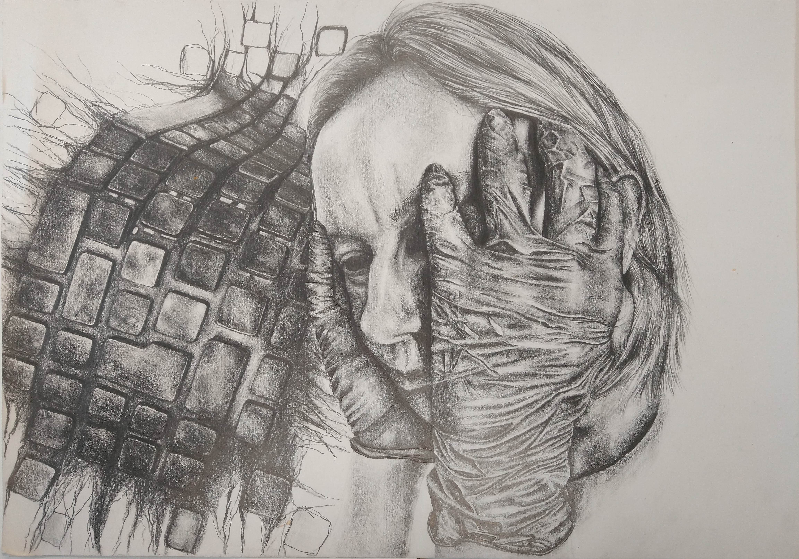
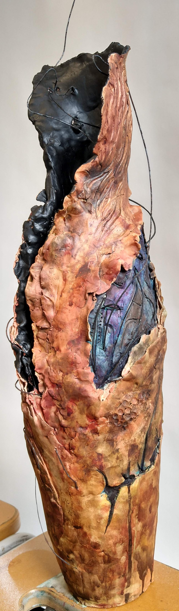
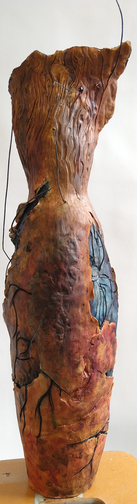
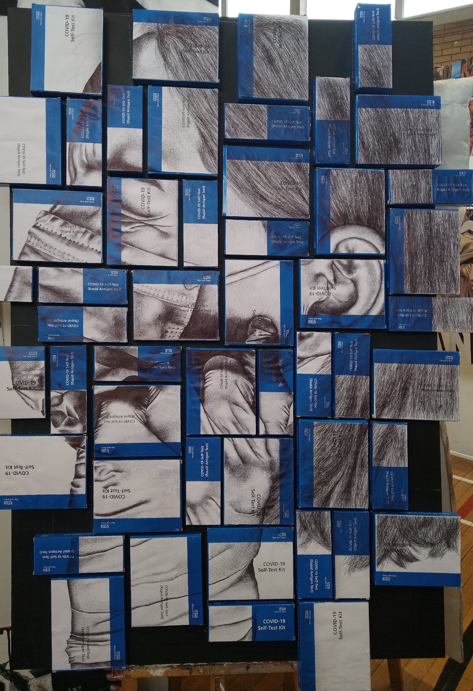
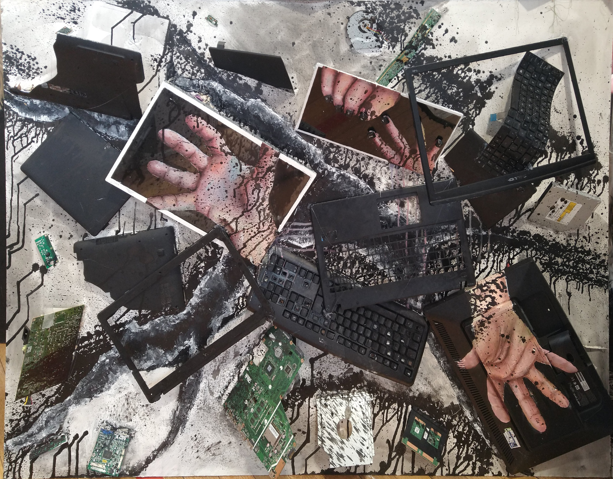

Art & Creative Portfolio
Visual work
A-Level Fine Art
A selection of pieces from my A-Level Fine Art course, showcasing a range of media and techniques. This includes pencil drawings, sculptures, and mixed media pieces. The final piece was displayed in an exhibition at the end of the course. I focused on the intersection of technology and humanity, exploring how they influence each other - especially throughout the Covid-19 pandemic.









IBM Technical Highlights
Supported the build and development of an initiative to encourage young girls into technology. Programmed a Boston Dynamics Spot robot to take pictures with a camera to provide a paralysed photographer with the ability to take photos. Check out the video!
Skills: Boston Dynamics SDK, Python, Collaboration, Communication
My Creative Process
Creativity is a huge part of my life, from coding to fibre arts and beyond. It appears in my hobbies, including digital art, knitting and ballet, and it also influences how I approach technical projects, including creating accessible dashboards and real-life applications.
Key interests: Krita, baking, storytelling, communication, inclusion, diversity of thought, and the intersection of art and technology.